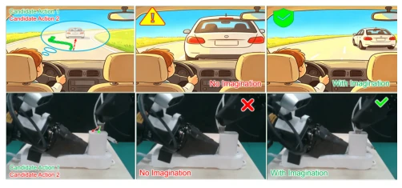
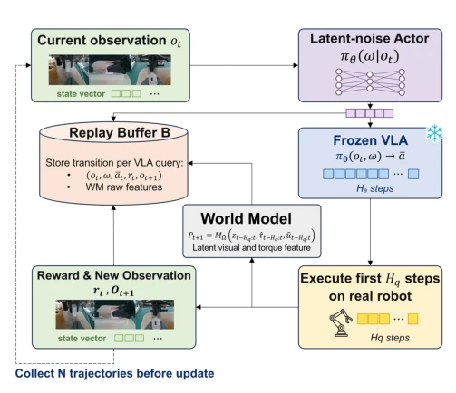
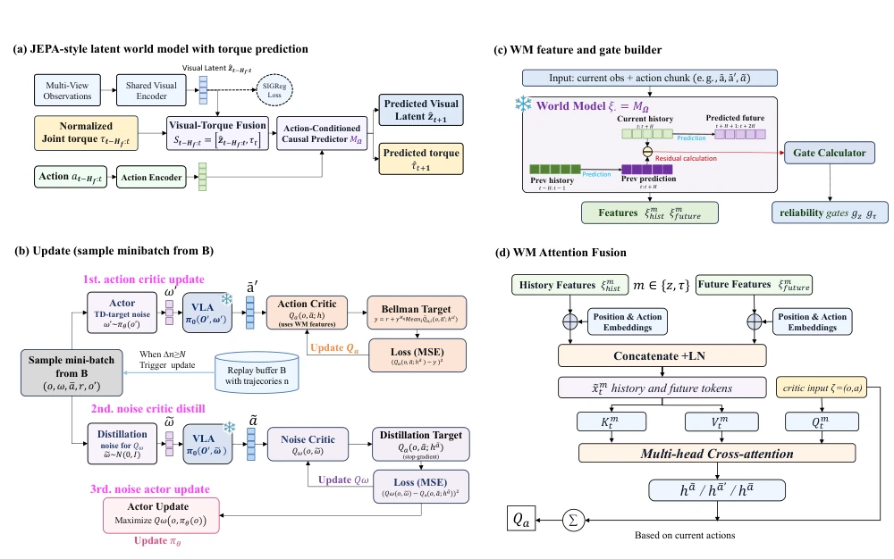
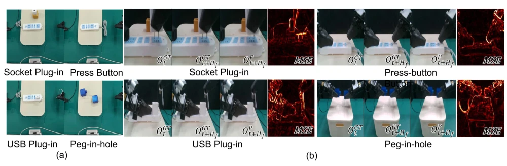
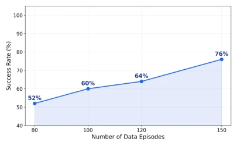
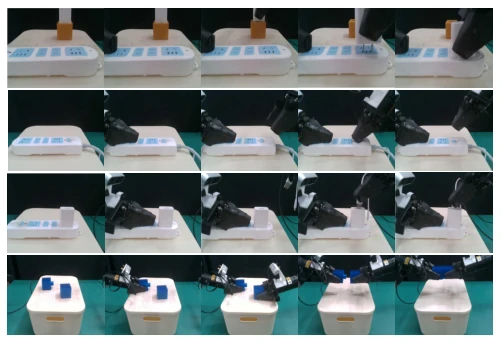
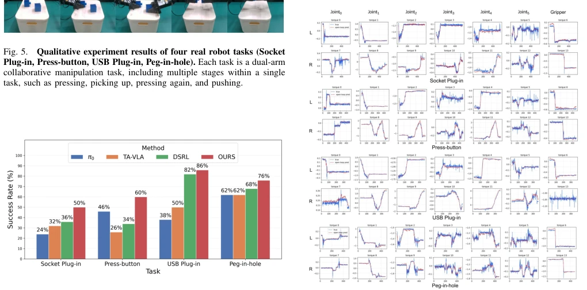
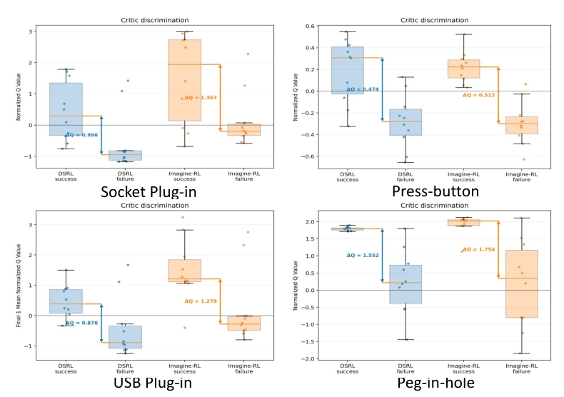

Imagine-RL adds a "mind-reading" capability to the tedious VLA reinforcement learning: not only looking at the present, but also "imagining" future visual and torque consequences through the world model. This trick indeed works well in contact-rich operations, after all, who can distinguish between a "gentle stroke" and a "hard clash" just by looking at the screen? The authors did not fine-tune the massive VLA backbone, but froze it, only training a lightweight noise space policy, saving resources and being efficient. However, this method relies extremely on the prediction accuracy of the world model; if the model "imagines" wrongly, won't the critic be led astray? Moreover, relying solely on residual confidence to filter "hallucinations", if the residual itself is misleading, this "confident" critic might be even more blind than blind guessing. Overall, it is a smart "lazy" strategy, using prediction to replace expensive physical trial-and-error, but betting everything on the accuracy of latent prediction, where risks and benefits coexist.
Although existing Vision-Language-Action (VLA) models have strong generalization, they often exhibit "high vision, low execution" in contact-rich operations, because pure visual observation is difficult to capture contact phenomena such as resistance and slipping [4], [5]. Although force-aware VLA introduces torque information, it is mostly used for action generation rather than value assessment [4]. In the reinforcement learning fine-tuning stage, the traditional Critic scores only based on current observations, unable to distinguish actions that are visually similar but have vastly different consequences (e.g., "gentle push" vs. "violent collision"), leading to difficulty in policy optimization. Although existing work utilizes world models for prediction [12], [13], [14], most rely on pixel-level reconstruction or only focus on visual futures, lacking explicit modeling of force/torque dynamics. Especially noise space RL methods like DSRL, whose Critic completely ignores future consequences caused by actions [9]. Therefore, there is an urgent need for a lightweight Critic that can combine current evidence with future visual-torque consequences, to improve the success rate of contact-rich operations under the premise of freezing VLA.

Fig. 1. Predictive critic evaluation. Both current and predicted future outcomes can be used to distinguish candidate actions, as illustrated by the driving analogy. Without imagining future consequences, two steering ac- tions may appear similarly plausible. By predicting their future trajectories, however, one can identify which action leads to a safer outcome. Similarly, our critic evaluates candidate actions using both the current reward and the predicted future visual–torque outcomes, allowing it to distinguish actions that likely to succeed from those likely to fail.
The core of Imagine-RL is a framework where a frozen VLA and a frozen Visual-Torque Latent World Model (VTLWM) collaborate. The overall process is divided into three steps: First, VTLWM autoregressively predicts future visual and torque latent representations based on candidate action blocks, without pixel reconstruction; Second, construct a residual confidence-guided Cross-Attention Critic, fusing current observations, historical features, and predicted future features; Finally, use the "teacher" value generated by this Critic to distill and train a lightweight noise space Actor. Innovations lie in: 1) VTLWM module: Extends LeWorldModel [17], jointly predicts visual and torque features, fuses multi-view images through a shared encoder, and introduces SIGReg loss to ensure dynamic stability. 2) Residual confidence mechanism: Uses the residual of the previous prediction window (difference between historical observation and historical prediction) to calculate the confidence prior for each future time step, suppressing unreliable "imagined" futures through the Attention Bias term. 3) Predictive Critic: Adopts Cross-Attention mechanism, allowing current state Query to retrieve information from History (Key/Value) and Predicted Future (Key/Value), and uses confidence as a weighting factor, finally outputting action value containing current evidence and predicted consequences.

Fig. 2. Replay Buffer Collection of Imagine-RL

Fig. 3. Technical realization of the teacher-style predictive critic. Read panels (a), (c), and (d) as one path: candidate action predicts visual–torque future and is used in confidence-guided attention to give teacher action value. Panel (b) then shows how this value teaches the noise critic and actor. Thus, the action critic scores what the robot is doing now together with what that action is predicted to cause.
Evaluated on four real contact-rich operation tasks (Socket Plug-in, Press-button, USB Plug-in, Peg-in-hole), 50 trials per task. Baselines include pretrained VLA (π0), force-aware VLA (TA-VLA), and noise space RL (DSRL). Results show that Imagine-RL requires only 100 RL trajectories (50 warm-up + 50 update), average success rate improved by 23.6% compared to DSRL, and 60% compared to VLA baseline. Ablation analysis shows that VTLWM can accurately predict contact-related visual and torque dynamics (visual cosine similarity >0.9, torque MAE<0.05). Critic discrimination capability analysis shows that after introducing predicted features, the Q-value margin (Margin) between success and failure trajectories significantly increased (average increase 26%), proving the model can effectively distinguish action consequences. Additionally, as online interaction data increases, success rate continues to rise rapidly, verifying the convergence efficiency of the method.

Fig. 4. Real-robot settings and qualitative results of action-conditioned visual prediction from our Latent World Model (key frames). (a) Four contact-rich settings (Socket Plug-in, Press-button, USB Plug-in, Peg-in-hole). (b) VTLWM autoregressively predicted future representations OP t+Hf and

Fig. 7. Success rate with increasing online interaction data.

Fig. 5. Qualitative experiment results of four real robot tasks (Socket Plug-in, Press-button, USB Plug-in, Peg-in-hole). Each task is a dual-arm collaborative manipulation task, including multiple stages within a single task, such as pressing, picking up, pressing again, and pushing.

Fig. 6. Success rates on the four real-robot tasks (Socket Plug-in, Press- button, USB Plug-in ,and Peg-in-hole, each task 50 trials), 50 episodes RL training (every 10 episodes updating once), after 50 episodes warm-up RL training.

Fig. 9. Critic discrimination analysis. Results on Socket Plug-in, Press-button, USB Plug-in, and Peg-in-hole. For each task, DSRL and Imagine-RL score the same executed action chunks from 10 held-out successful and 10 failed trajectories under the same reward setting. Q-values are z-score standardized separately for each critic within each task, and boxes summarize the trajectory-level distributions. For all four tasks, each dot is the standardized Q-value at the final retained VLA query step of one trajectory. The annotated margin is ∆Q = E[ ¯Q | success] −E[ ¯Q | failure]. The DSRL and Imagine-RL margins are, respectively, 0.996 and 1.367 on Socket Plug-in, 0.474 and 0.512 on Press-button, 0.876 and 1.279 on USB Plug-in, and 1.552 and 1.754 on Peg-in-hole. These correspond to relative i